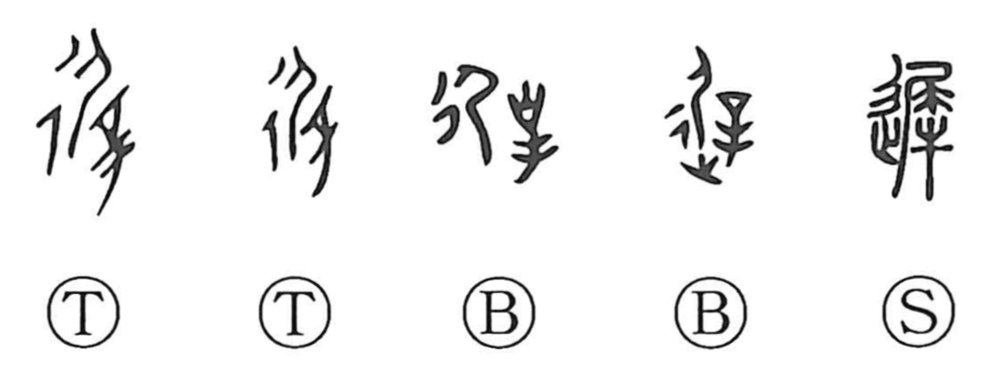

遅

Kun: okureru, okurasu, osoi | On: chi
late ・ slow ・ to be delayed ・ to delay
Explanation
Originally written 遲, this is a phono-semantic character. In oracle-bone and bronze forms the phonetic element appears as 屋, which Shirakawa reads as depicting a person being punished from behind with the barbed branding needle 辛. When the movement element 辵 (“to go, to walk”) is added, the whole graph pictures movement hindered—walking with difficulty—and thus comes to mean slow, late, to fall behind. Related characters in the same sound series include 墀 and 穉. The Book of Odes (Bei Feng, Gu Feng) preserves the sense in a line that speaks of going “slowly, slowly” (chichi), an onomatopoeic evocation of a heavy, dragging gait.